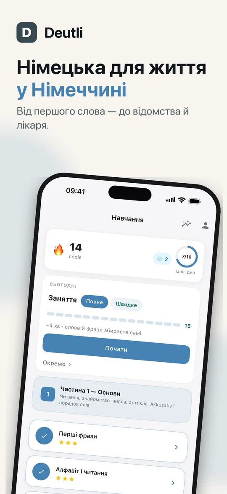
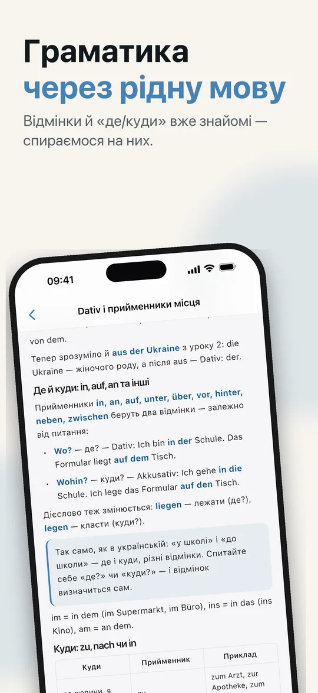
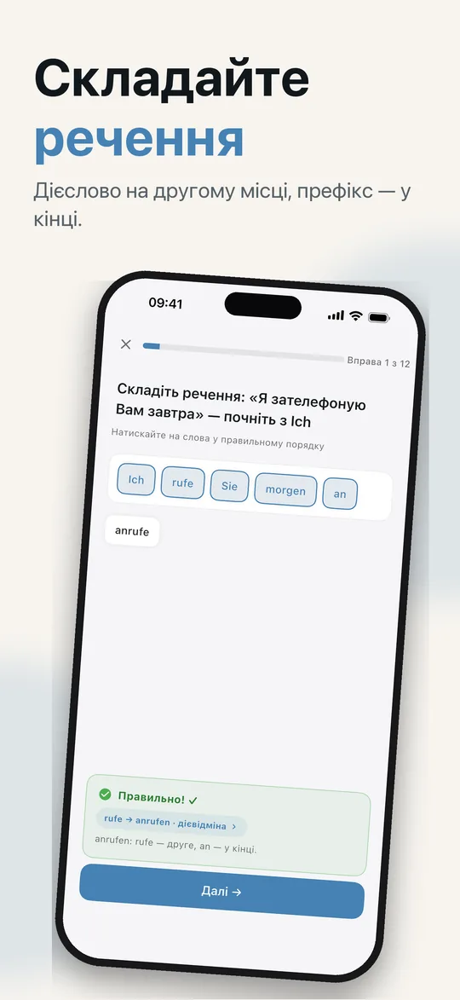
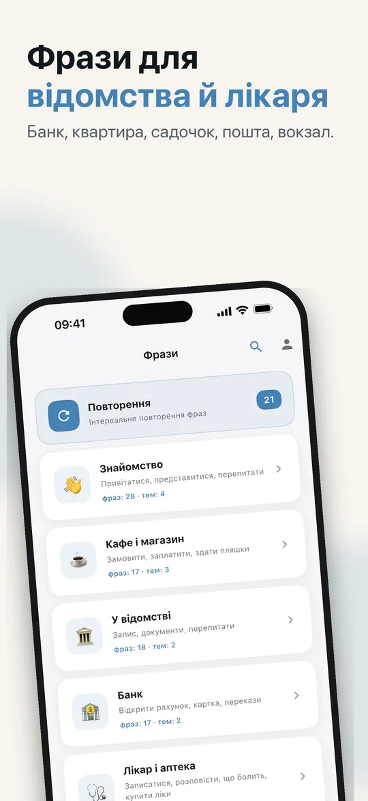
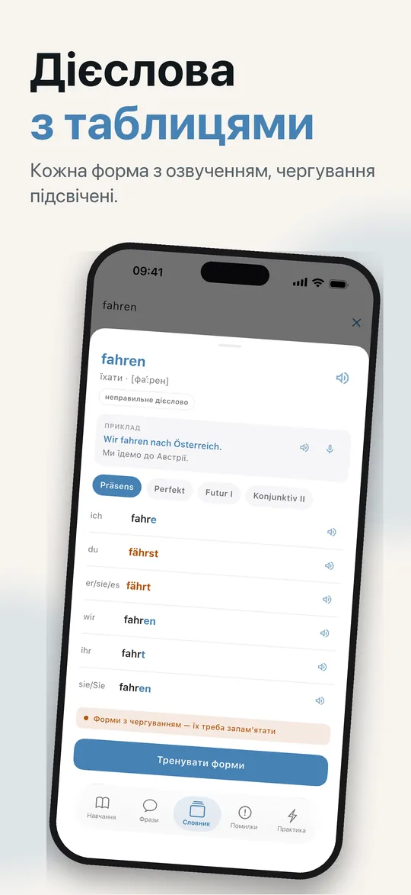
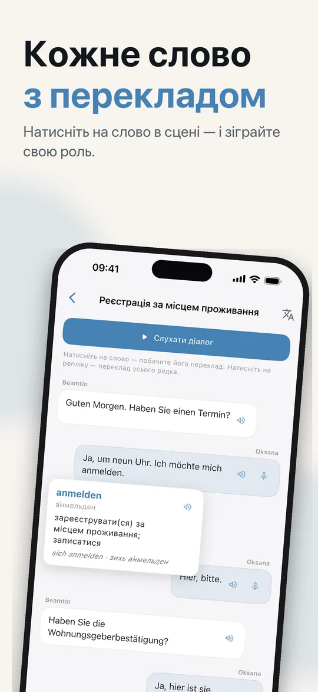
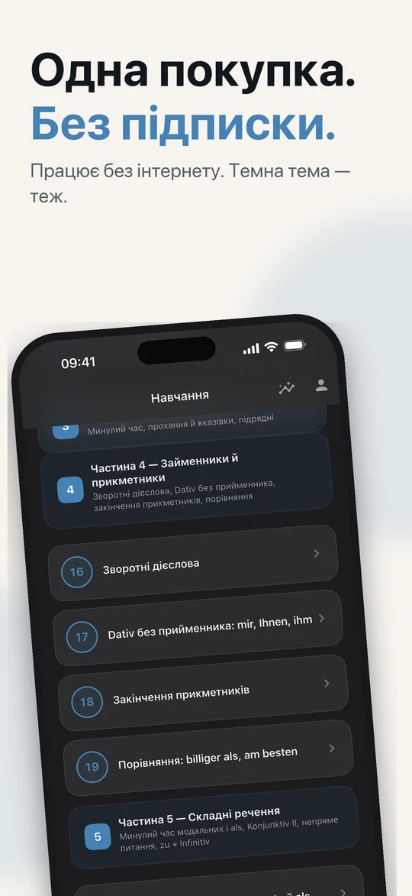

Граматика з поясненнями українською, фрази для Bürgeramt, банку й лікаря та діалоги, які ви промовляєте самі. Для тих, хто переїхав до Німеччини, Австрії чи Швейцарії й починає вчити німецьку.
Почати можна безкоштовно · iPhone та iPad
Від алфавіту до Konjunktiv II — рівні A1 і A2.
Пробний урок і 23 уроки — від алфавіту, артиклів і чисел до Perfekt, Konjunktiv II і непрямих питань.
466 вправ — вибір відповіді, порядок слів, пропуски й пари — і 23 набори практики з 266 реченнями, щоб повернутися до вивченого.
180 фраз у 10 ситуаціях: Bürgeramt, банк, лікар, квартира, телефон та інтернет, садочок і школа, пошта, транспорт, кафе й знайомство. Тренуйтеся картками або тестом.
10 сцен — реєстрація адреси, перегляд квартири, запис до лікаря, перший день у садочку. Співрозмовник говорить, а свою половину ви кажете самі: плитками, з клавіатури чи вголос.
605 слів — кожен іменник з артиклем і множиною, у кожного слова приклад-речення з озвученням — і 120 дієслів із таблицями, від Präsens до Konjunktiv II.
35 пар на те, що найчастіше пропускає вухо, звикле до української чи російської: довгі й короткі голосні, u та ü, o та ö, -e та -er, dem та den.
Українська, російська чи англійська. В українському й російському інтерфейсі слова й фрази мають транскрипцію кирилицею з наголосом і довготою: ґу́:тен та:к.
Натисніть лампочку під час будь-якої вправи — і правило перед очима, а місце у вправі не губиться.
Почали урок на iPhone — продовжуйте з того ж місця на iPad. Синхронізація йде через ваш iCloud — без акаунта й без нашого сервера. Частина Deutli Pro.
Без акаунта, без реєстрації, без реклами й без стеження в інших застосунках. Уроки й прогрес зберігаються на вашому пристрої. Додаток надсилає анонімну статистику використання й звіти про збої — ніколи не те, що ви пишете чи кажете, і нічого, що вказує на вас, — з обробкою в Європейському Союзі. Як це влаштовано
Сім екранів із додатка — гортайте.







Українська, російська чи англійська — під час першого запуску. Змінити можна будь-коли в профілі.
Уроки по порядку, у кожному теорія й вправи — від алфавіту до Konjunktiv II.
Фрази, діалоги й словник для місць, куди ви ходите щотижня: Bürgeramt, лікар, банк.
Пробний урок і уроки 1–6 — безкоштовно. Акаунт не потрібен.
Незабаром в App Store